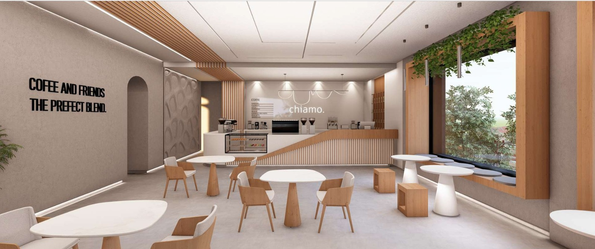
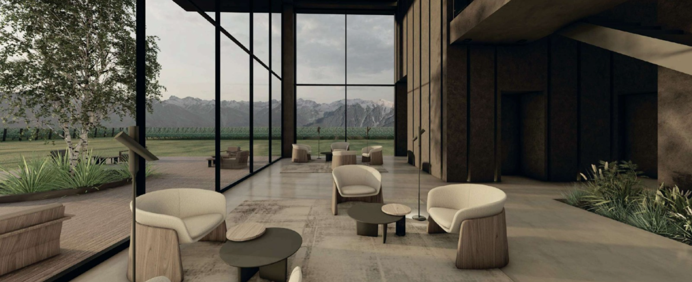
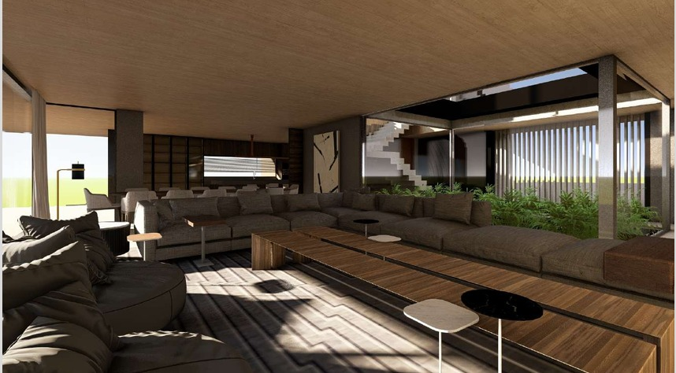
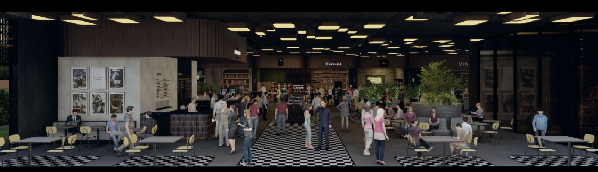

Chiamò
Integrado al diseño del hotel donde se emplaza, este café propone un ambiente acogedor y moderno. Madera Paraíso y microcemento crean un diálogo entre calidez y precisión.

Urku
Bodega que se integra al paisaje montañoso de Luján de Cuyo. Hormigón, piedra y metal en diálogo con las cumbres andinas. Urku — montaña en quechua.

Radix
El núcleo del hogar. Cocina, estar y comedor integrados en Barrio Dalvian. Un patio interior actúa como pulmón verde, introduciendo luz y naturaleza al corazón de la vivienda.

Kairós
Proyecto de tesis que reinterpreta la idea de mercado como espacio de consumo, encuentro y cultura. Combina tradición y contemporaneidad mediante dos volúmenes complementarios.

Chiamò
Integrado al diseño del hotel donde se emplaza, este café propone un ambiente acogedor y moderno. Madera Paraíso y microcemento crean un diálogo entre calidez y precisión. El espacio busca que cada cliente sienta que el café fue diseñado para él.
Urku
Bodega que se integra al paisaje montañoso de Luján de Cuyo. Hormigón, piedra y metal en diálogo con las cumbres andinas. Urku significa montaña en quechua — el proyecto nace de ese concepto de arraigo y verticalidad.
Radix
El núcleo del hogar. Cocina, estar y comedor integrados en Barrio Dalvian. Un patio interior actúa como pulmón verde, introduciendo luz y naturaleza al corazón de la vivienda.
Kairós
Proyecto de tesis que reinterpreta la idea de mercado como espacio de consumo, encuentro y cultura. Combina tradición y contemporaneidad mediante dos volúmenes complementarios: uno dedicado al abastecimiento y la gastronomía, otro con coworking, gimnasio y estética.